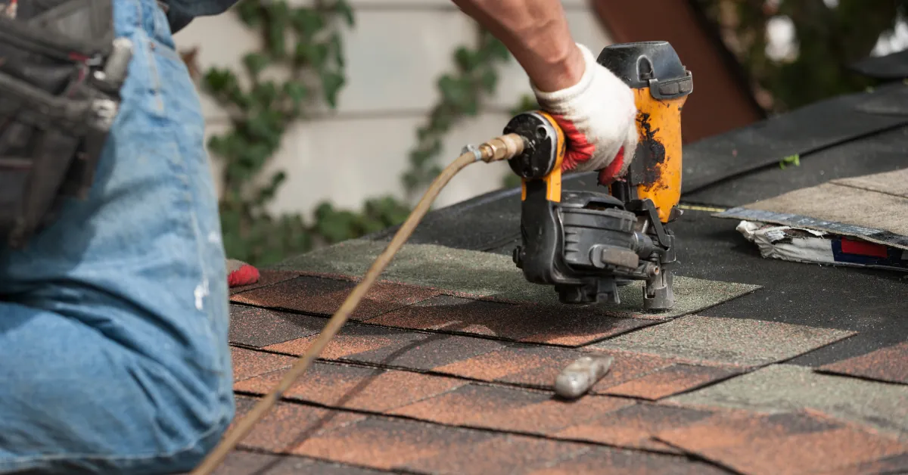

You notice a stain on the ceiling after a Utah windstorm, or you find shingles in the yard after a hailstorm. Suddenly the same question keeps looping in your head:
Will homeowners insurance actually pay for a new roof, or are we on the hook for everything?
If you own a home anywhere in the Salt Lake Valley, you’re not alone. Between heavy snow, spring wind, and the occasional hail, our roofs work hard. In this guide, we’ll walk through when insurance typically pays, when it does not, and what you can do to improve your odds of getting your roof replacement covered.
We’ll explain it the same way we do for our own roofing customers: clearly, honestly, and with Utah weather in mind.
What We’ll Cover:
Here is a quick guide so you can jump to what you need:
- How Homeowners Insurance Covers Your Roof
- When Homeowners Insurance Will Pay For A New Roof
- When Homeowners Insurance Will Not Pay For A New Roof
- How Policy Type And Deductible Affect Your Payout
- What To Do If You Think You Need A New Roof
- Steps In The Roof Insurance Claim Process
- Tips To Improve Your Chances Of Claim Approval
Now let’s break down how insurance really looks at your roof.
How Homeowners Insurance Covers Your Roof

When people ask if homeowners insurance will pay for a new roof, what they’re really asking is how the roof fits into the policy.
The Roof As Part Of Your Dwelling Coverage
On a standard homeowners policy, your roof is part of your dwelling coverage. That is the section that protects the structure of your home: walls, framing, roof, attached garage, and so on.
If a sudden, accidental event damages your roof, the policy may cover repair or replacement, up to your coverage limit. Common examples in the Salt Lake Valley include:
- Wind ripping off shingles
- Hail bruising or fracturing asphalt shingles
- A tree branch falling during a storm
- Fire damage from an interior or exterior fire
What this really means is that insurance does not look at your roof as a separate add-on. It is part of the house itself. If the house is insured properly, the roof usually is too, unless there is a specific exclusion written into your policy.
Actual Cash Value Vs. Replacement Cost
One of the biggest factors in whether insurance will “pay for a new roof“ is how they calculate the payout:
- Replacement cost value (RCV) coverage helps pay what it actually costs to replace the damaged roof with similar materials, minus your deductible.
- Actual cash value (ACV) coverage subtracts depreciation for age and wear, so you may receive far less than the full replacement cost.
We see this a lot with older roofs. For example, if you have a 20-year shingle roof that is 15 years old and your policy is ACV, the insurance company may say most of the useful life has already been used. They will only pay a fraction of the cost, even if a storm triggered the damage.
If you are not sure whether you have ACV or RCV, it is worth pulling out your policy or calling your agent before a problem hits. That one detail can easily mean a difference of thousands of dollars.
When Homeowners Insurance Will Pay For A New Roof
So when will insurance actually pick up the tab for a full roof replacement in Utah?
Covered Perils That Can Lead To Roof Replacement
Most policies are built around “covered perils”. If one of those causes significant roof damage, a replacement may be approved. Common covered perils include:
- Windstorms
- Hail
- Fire and smoke
- Lightning
- Falling objects, like tree limbs
- Sudden accidental water damage from above
In many wind or hail situations around the Wasatch Front, we see this pattern:
- A major storm hits and damages shingles across a large section of the roof.
- We inspect and find fractures, lifted shingles, or broken seals across multiple slopes.
- We document that repairs would be patchy and might not restore the roof to a reliable condition.
- The adjuster agrees that a full replacement is the only reasonable fix.
In those cases, yes, insurance may pay for a new roof, subject to your deductible and policy terms.
Situations Where You May Get Only Partial Payment
Sometimes the answer is “yes, but not all of it.“ That usually happens in a few situations:
- ACV coverage instead of replacement cost. You get a depreciated amount, not the full cost.
- Mixed damage and old wear. The adjuster may pay only for the clearly storm-related portion.
- Cosmetic-only damage on certain materials. Some policies limit coverage if damage is only cosmetic on metal or specialty materials.
We often have to walk homeowners through this carefully. From your point of view, you just know the roof is leaking. From the insurer’s point of view, they are separating what the storm caused from what age already did.
That is why good documentation and a detailed inspection report from a qualified roofer can make such a big difference.
When Homeowners Insurance Will Not Pay For A New Roof
Just as important as knowing when insurance will pay is knowing when it almost never will.
Common Exclusions And Denied Claims
Policies typically exclude losses that are not sudden or accidental. These are common reasons claims are denied:
- Long-term leaks that have been seeping for months or years
- Mold or rot that built up over time
- Damage from pests living in the attic or roof structure
- Poor workmanship from a previous contractor
- Use of unapproved or nonstandard roofing materials
We have seen homeowners surprised when a claim is denied because the carrier says the issue started long before the last storm. From the carrier’s perspective, they are not a maintenance plan. They are there for specific events.
Reading the exclusions section of your policy is not fun, but it can prevent unwanted surprises later.
Age, Wear And Tear, And Maintenance Issues
Another big reason insurance will not pay for a new roof is simple age.
If your asphalt shingle roof is already at or past its expected lifespan, an adjuster may rule that any failure was due to normal wear and tear, not a covered event. The same goes for curling shingles, brittle shingles, or missing granules that build up over the years.
Maintenance also plays a big role:
- Missing flashing around chimneys or vents
- Clogged gutters that force water back under shingles
- Moss or debris that traps moisture on the roof
If we can see that a basic maintenance step could have prevented the damage, there is a good chance the insurance company will see it too.
In short, insurance is more likely to pay for a new roof that was in reasonably good shape before a storm, not a failing roof that finally gave out.
How Policy Type And Deductible Affect Your Payout
Even if your roof damage is clearly covered, the details of your policy and deductible control how much money actually ends up in your hands.
Understanding Coverage Limits And Endorsements
Every homeowner’s policy has coverage limits. That is the maximum the company will pay for your dwelling, including the roof.
If construction costs in the Salt Lake Valley have risen since you bought your home, it is possible your current limit is too low. We see this when a full rebuild estimate comes in higher than the policy limit.
You may also have endorsements or special add-ons that affect the roof, such as:
- Replacement cost coverage upgrade for the roof
- Cosmetic damage exclusion for metal roofs
- Extended replacement cost for the whole dwelling
These can help or hurt, depending on how they are written. A quick policy review with your agent before storm season can help you understand exactly what would happen if your roof was hit.
Wind And Hail Deductibles And Special Rules
In many parts of Utah, carriers use a separate wind and hail deductible. Instead of a flat dollar amount, it might be a percentage of your dwelling coverage.
For example, if your dwelling is insured for 400,000, and you have a 1 percent wind and hail deductible, you are responsible for the first 4,000 of a covered hail claim.
Other special rules we sometimes see include:
- Higher deductibles for older roofs
- Caps on how many times a roof can be replaced due to hail within a certain time span
- Requirements to use specific materials or installation methods
Understanding these details up front helps you decide whether filing a claim makes sense or whether you are better off handling a smaller repair out of pocket.

What To Do If You Think You Need A New Roof
If you suspect your roof might need replacing, the steps you take in the first few days can shape how smoothly the insurance side goes.
Documenting Damage Before You File A Claim
Before you call the carrier, it helps to gather evidence.
Here is what we recommend homeowners in the Salt Lake Valley do after a storm:
- Take clear photos of any visible damage you can safely see from the ground.
- Photograph shingles in your yard, dented gutters, or damaged siding.
- If you notice interior leaks or stains, photograph those too.
- Write down the date and time of the storm and what you observed.
Then schedule a professional roof inspection. At Go Pro Roofing, we walk the roof, document hail hits or wind damage, and provide an honest assessment of whether the situation rises to the level of a claim.
Sometimes we are able to tell a homeowner that a simple repair will solve the problem and that a claim is probably not worth filing. Other times the damage is severe enough that we recommend contacting your insurer right away.
Working With Contractors And Insurance Adjusters
Once a claim is filed, the insurance company typically sends an adjuster to inspect the roof.
Whenever possible, we recommend having a reputable roofing contractor on site at the same time:
- We can point out subtle damage the adjuster might miss.
- We can discuss the local building code requirements that affect how the roof must be installed.
- We can compare the adjuster’s measurements and scope of work with what is actually needed to restore your roof.
In our experience, claims go more smoothly when there is clear communication between you, the roofer, and the adjuster from the start.
Steps In The Roof Insurance Claim Process
Many homeowners feel intimidated by the idea of an insurance claim. Once you understand the typical steps, it feels a lot more manageable.
From First Inspection To Final Payment
While every carrier has its own process, a roof claim usually follows this pattern:
- Initial roof inspection by a qualified roofer to confirm damage.
- Claim filed with your insurance company, often by phone or app.
- Adjuster visit to inspect the roof and document damage.
- Scope of work and estimate prepared by the adjuster.
- Roofer review of the scope to confirm it matches what is needed.
- First payment issued, often called the actual cash value payment.
- Roof replacement completed by your contractor.
- Final invoice submitted by the roofer to the insurer.
- Recoverable depreciation released, if you have replacement cost coverage.
We stay involved throughout this process for our customers so that measurements and codes are handled correctly and no critical items are left out.
How Long Roof Claims Typically Take
Timing depends on the size of the storm, the responsiveness of the carrier, and how quickly inspections can be scheduled. In the Salt Lake Valley, we typically see:
- Simple claims with light damage: a few weeks from first inspection to final payment
- Larger storm events with many homes affected: several weeks to a few months
You can help keep things moving by:
- Responding quickly to calls or emails from your adjuster
- Signing any required documents promptly
- Choosing a contractor that is ready and able to schedule your project
The more organized you are with paperwork, photos, and estimates, the less back and forth there tends to be.
Tips To Improve Your Chances Of Claim Approval
You cannot control how a storm hits, but you can control how prepared you are when it does.
Maintenance And Records Insurers Like To See
Insurers are more likely to approve a roof claim if they see that you are a responsible homeowner. Helpful records include:
- Invoices from past roof repairs or maintenance
- Photos of the roof taken before the storm
- Documentation of gutter cleaning and basic upkeep
- Inspection reports from licensed roofers
At Go Pro Roofing, we often provide inspection reports for real estate transactions and routine checkups. Those reports can be powerful evidence that your roof was in good condition before the storm, which supports your case that the damage is truly storm related.
Staying on top of small repairs, like replacing a missing shingle or resealing flashing, also shows the carrier that you did your part.
Common Mistakes To Avoid With Roof Claims
We also see a few mistakes that can hurt a valid claim:
- Waiting months after a storm to report damage
- Making temporary repairs without documenting the original damage
- Filing claims for minor issues that clearly predate the storm
- Hiring unlicensed or out-of-state contractors who disappear after the job
Choosing a local, certified, and insured roofing contractor helps protect you. It gives the insurer confidence that the work will be done to code and that warranty issues will be handled locally.
If you are ever unsure whether a situation is claim worthy, a quick roof inspection and honest conversation can save you a lot of frustration.

Frequently Asked Questions About Homeowners Insurance and Roof Replacement
Will homeowners insurance pay for a new roof after a storm?
Homeowners insurance may pay for a new roof if it’s damaged by a covered peril like wind, hail, fire, or a fallen tree. The roof must have been in reasonably good condition before the event, and payment is still subject to your policy type, limits, exclusions, and deductible.
When will homeowners insurance not pay for a new roof?
Insurers usually deny roof claims caused by long-term leaks, rot, mold, neglect, pest damage, or poor workmanship. Normal wear and tear, old shingles past their lifespan, and lack of basic maintenance (like clogged gutters or missing flashing) are also typically excluded because insurance is meant for sudden, accidental damage—not ongoing deterioration.
How do actual cash value and replacement cost affect what insurance pays for a new roof?
With replacement cost value (RCV), your insurer helps cover what it actually costs to replace the roof, minus your deductible. With actual cash value (ACV), they subtract depreciation for age and wear, often paying far less. For older roofs, ACV can leave you covering a large portion of the replacement.
What should I do first if I think I need a new roof after hail or wind in Utah?
Start by documenting everything: take photos of visible damage, shingles in the yard, dented gutters, and interior water stains, and note the storm date. Then schedule a professional roof inspection. A qualified roofer can confirm if damage appears storm-related and whether filing a homeowners insurance claim makes sense.
Will filing a roof claim make my homeowners insurance go up?
A roof claim can affect your future premiums, especially if you file multiple claims within a few years. However, large, legitimate storm claims are normal in many areas. It’s often better to use insurance for significant damage and pay smaller, maintenance-type repairs out of pocket when possible.
How long does a homeowners insurance roof claim usually take from start to finish?
Timing varies by carrier and storm size, but many roof claims wrap up within a few weeks for simple damage. After major hail or wind events affecting many homes, it can stretch to several months. Quick responses, complete documentation, and choosing a ready-to-schedule local roofer help speed things up.
Get Clarity Before You Need A New Roof
So, will homeowners insurance pay for a new roof? The real answer is that it depends on three big factors: what caused the damage, what kind of coverage you have, and how well you document and maintain your roof.
If you are in West Valley City or anywhere in the Salt Lake Valley and you are worried about possible roof damage, the smartest move is to start with a professional inspection and a clear explanation of your options. That way you are not guessing when you call your insurance company, and you are not pressured into filing a claim that does not make sense.
At Go Pro Roofing, we help homeowners decide whether a claim is appropriate, provide detailed inspection reports, and install new roofs that meet manufacturer standards and building codes. When your roof is on the line, having a local Master Roofer Certified team in your corner can make the insurance side feel a lot less overwhelming.
Related reads:
- What To Do If Your Roof Is Damaged In A Storm
- Why Electrical Panel Upgrades Are Surging in New Jersey’s Aging Homes
Key Takeaways
- Homeowners insurance may pay for a new roof when sudden, accidental events like wind, hail, fire, or falling objects cause significant damage, and the roof was in reasonable condition beforehand.
- Whether homeowners insurance will pay for a new roof in full depends heavily on your policy type, with replacement cost value (RCV) covering more than actual cash value (ACV), which deducts for age and wear.
- Claims are often denied when damage stems from age, long-term leaks, poor maintenance, or faulty workmanship, since insurers cover events—not routine wear and tear.
- Your roof payout is also shaped by coverage limits, special endorsements, and wind/hail deductibles, so reviewing your policy and limits before storm season can prevent costly surprises.
- Documenting storm damage, scheduling a professional roof inspection, and coordinating closely with both your roofer and insurance adjuster greatly improve your chances of claim approval for a roof replacement.